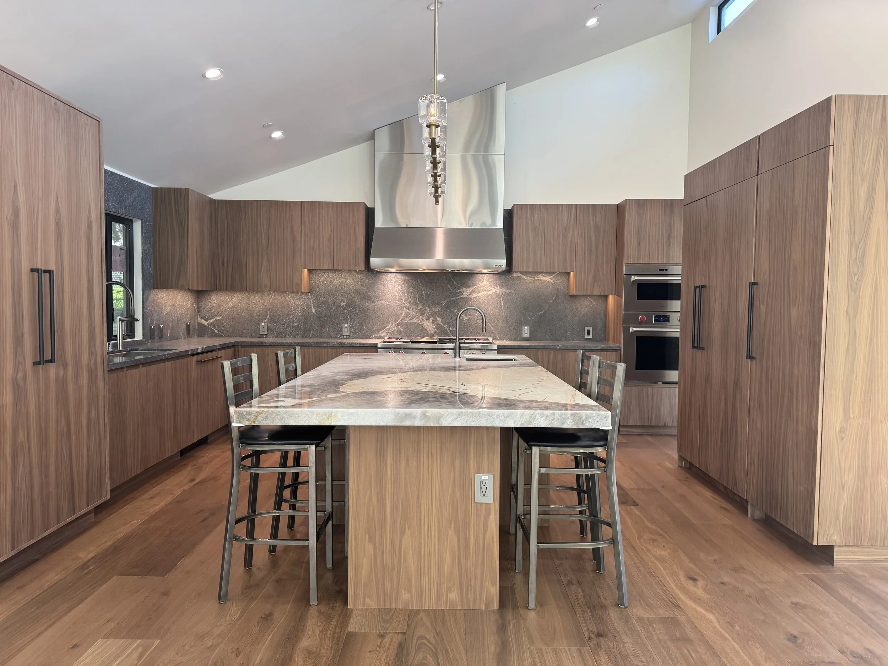
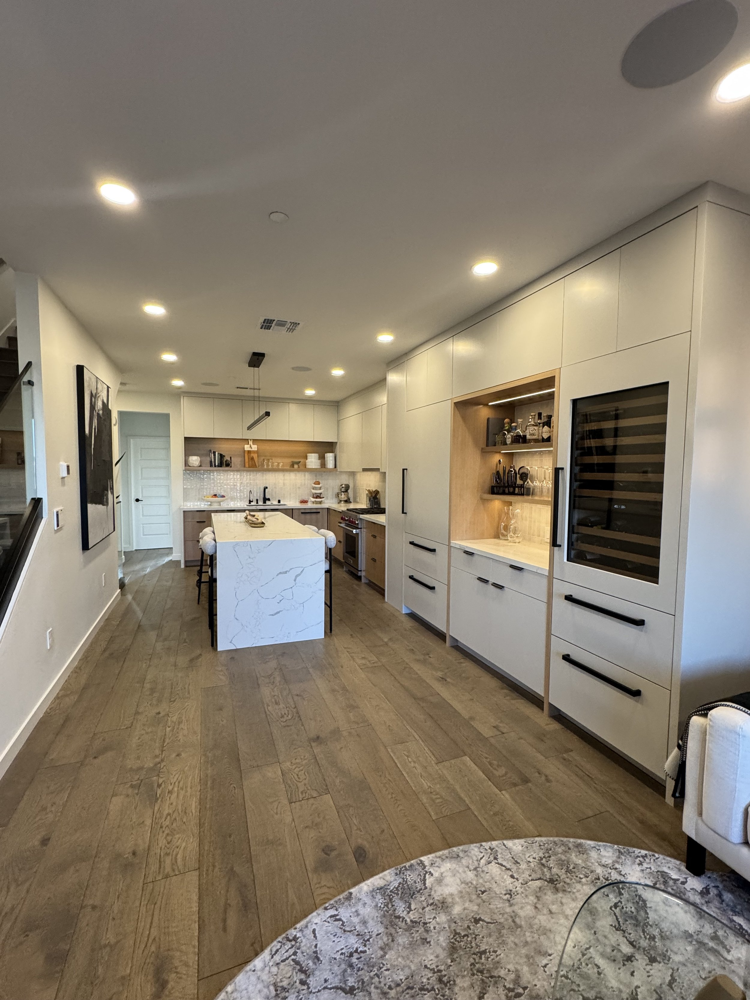

Background-checked, license-verified, 35 real hires. Not linked from the site, Instagram, or Google.
Top 27% of California's licensed contractors. Zero reviews on that platform to back it up.
BBB shows A+, zero complaints in 3 years. The ask that produced 15 reviews on Thumbtack has never gone out anywhere else.
A single positioning line up front, the real differentiators named directly, and a scroll-triggered drawer gallery standing in for the project gallery the old site never had.

Every part of the rebuild has a job. Here's what each one is actually for.
Replace descriptive copy ("crafting custom cabinets") with a real positioning statement a visitor remembers.
CNC and 2D/3D modeling before production, stated directly instead of buried in a services bullet.
A real gallery in place of no dedicated portfolio at all, built around the same real project photography.
Thumbtack's 15 reviews, BuildZoom's standing, and a corrected Nextdoor listing, all connected back to one site instead of five disconnected profiles.
A Guides section built around the questions a homeowner actually has before hiring a custom shop.
One clear path forward for an interested homeowner, not five competing calls to action.
Quote not yet collected. This is a concept draft Ahmed and Fernando haven't necessarily seen or reacted to yet, nothing gets attributed to them until they actually have.
Real Reaction Pending